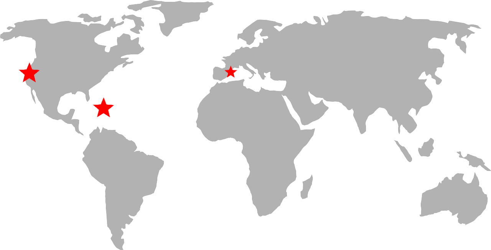

Michael's Top Travel Destinations

Hi, my name is Michael Stuart. I am 19 years old and am from Nashville, Tennessee, but my love for travel has taken me all over the world. My passion for travelling comes from my dad, who was born in New Zealand and spent some time growing up in Japan. Because of his own upbringing and experience with many different cultures, he has wanted his kids to have a similar chance to experience all the world has to offer. Over the years I have been to 19 different countries and on this website I highlight three of my favorite places and experiences I had in the world. I highly recommend visiting these places and doing some of the things I did. Enjoy!
Places I've Been To
- England
- France
- Italy
- Spain
- Belize
- Mexico
- Honduras
- Haiti
- Bahamas
- Jamaica
- Dominican Republic
- Puerto Rico
- St. Maarten
- Amsterdam
- Vatican City